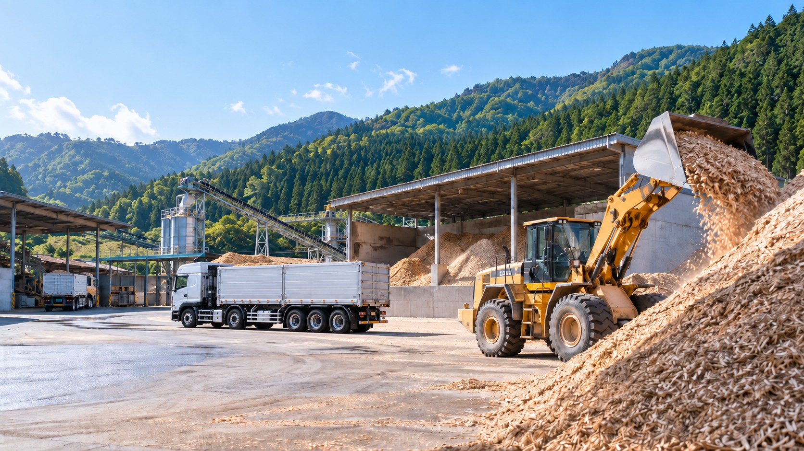
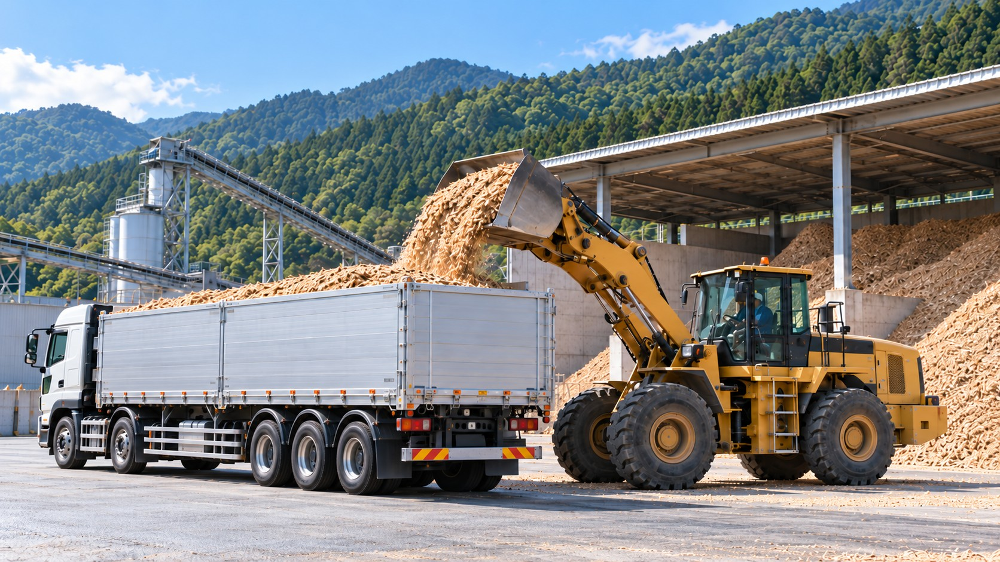

08 BIOMASS FUEL SUPPLY
OUR BUSINESS / SERVICE 08
バイオマス燃料供給
木質チップを、
地域のエネルギーへ。
森林整備や伐採から生まれる木材資源を木質チップへ加工し、バイオマス発電所などへ燃料として供給します。受け入れから品質管理・出荷まで一貫した体制で安定供給を支えます。
ABOUT SERVICE
バイオマス燃料供給について
株式会社Clearthでは、森林整備や伐採などから生まれる間伐材・未利用材・伐採木を、地域の大切な木材資源として有効活用しています。
受け入れた木材は、一次破砕と木質チップ製造を経て、粒度や異物混入の有無、状態を確認します。発電所での利用を見据えた品質管理を行い、燃料として扱いやすい状態へ整えます。
製造した木質チップは、保管時の状態を管理し、出荷前に確認したうえで積み込みます。運搬・供給まで一貫して対応し、継続的なバイオマス燃料供給を支えます。
- 木質チップ製造
- 品質確認
- 保管
- 積込・運搬
- 燃料供給
木材を単にチップとして販売するのではなく、森林から生まれた資源をエネルギーとして次の価値へつなげることが、Clearthのバイオマス燃料供給です。

WHY CLEARTH
Clearthのバイオマス燃料供給
森林資源の受け入れから燃料供給までを一つの流れとして管理し、継続的な利用を支えます。
- 01
製造から供給まで一貫対応
木材資源の受け入れから、破砕・チップ製造・品質確認・保管・出荷まで一貫して対応します。
- 02
安定した供給体制
原料の確保、製造、保管、出荷まで自社の流れとして管理し、安定した燃料供給につなげます。
- 03
利用を見据えた品質管理
燃料としての利用を見据え、製造から保管、出荷まで各工程で木質チップの状態を確認します。
- 04
森林資源の循環利用
森林から生まれた木材資源を燃料として活用し、地域資源の循環と有効利用につなげます。
FROM FOREST TO ENERGY
森林資源を、
次のエネルギーへ。
バイオマス燃料の供給には、原料となる木材の確認、破砕、選別、木質チップ製造、品質管理までの工程が欠かせません。
Clearthでは、木材資源を木質チップへ加工する工程から、保管・積込・運搬・供給まで一貫して対応しています。
- 森林資源
- 一次破砕
- 木質チップ製造
- バイオマス燃料供給
FLOW
木材資源から燃料供給まで
森林から生まれた木材資源を受け入れ、加工・品質確認・保管・運搬を経て、バイオマス燃料として供給します。
- 01木材資源の受け入れ
間伐材・未利用材・伐採木などを、種類や状態、受け入れ条件を確認したうえで受け入れます。
- 02一次破砕・チップ製造
木材を適切な大きさへ一次破砕し、用途を見据えた木質チップへ加工します。
- 03選別・品質確認
チップの粒度や状態、異物混入の有無を確認し、次の工程へつなげます。
- 04保管
製造した木質チップを保管し、出荷まで状態や在庫量を管理します。
- 05積込・運搬・供給
出荷前の確認後、供給計画に合わせて車両へ積み込み、運搬します。
バイオマス発電所などへ燃料として届け、森林資源をエネルギーへつなげます。
FOR YOU / WHO IT HELPS
こんなことでお困りではありませんか？
- 発電所向けの木質チップ燃料を相談したい
- 用途や受け入れ条件に合う供給方法を確認したい
- 供給量や供給頻度について相談したい
- 品質管理から保管・積込・運搬までまとめて相談したい
- 森林から生まれる木材資源をエネルギーとして活用したい
QUALITY CONTROL
安定供給を支える品質管理
- チップのサイズや状態を確認します。
- 金属などの異物混入がないか確認します。
- 用途や供給先の条件を見据えて管理します。
- 保管中の木質チップの状態を確認します。
- 積み込み前に出荷内容と状態を確認します。
CONTACT
バイオマス燃料の供給について
供給量・受け入れ条件・運搬・供給頻度などについては、お気軽にご相談ください。用途や必要な条件を確認し、対応内容をご案内します。
対応エリア
広島県全域を中心に対応しております。近隣県についても対応可能な場合がありますので、お気軽にご相談ください。
ご相談・お見積もりは無料です。木質チップの用途、供給量、受け入れ条件、運搬方法などを確認したうえでご案内します。